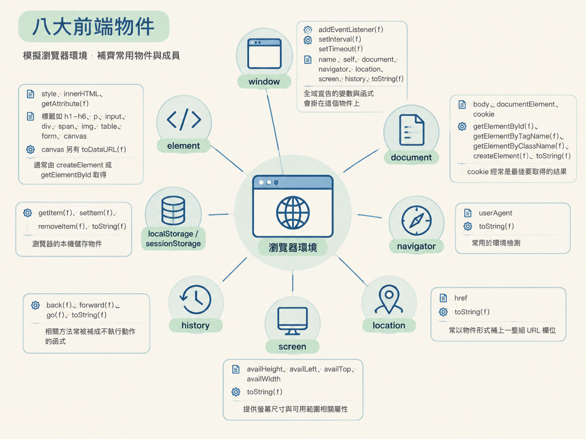

八大前端物件是補瀏覽器環境時，最常需要模擬的一組物件與成員清單。
上一節透過 Proxy 記錄程式讀取了哪些缺少的屬性。拿到日誌後，就可以用本頁核對物件、函式、別名與 toString 類別標籤，再逐項補齊環境。
表中的「常見成員」是前端程式碼經常讀取的屬性或方法。標有 (f) 的成員是函式（function），模擬時必須保留函式形式，不能只填入一般值。
| # | 物件 | 常被檢查的成員 | 備註 |
|---|---|---|---|
| 1 | window |
addEventListener(f)、setInterval(f)、setTimeout(f)、name、self、document、navigator、location、screen、history、toString(f) |
全域宣告的變數與函式會掛在這個物件上 |
| 2 | document |
body、documentElement、cookie、getElementById(f)、getElementByTagName(f)、getElementByClassName(f)、createElement(f)、toString(f) |
cookie 經常是最後要取得的結果 |
| 3 | navigator |
userAgent、toString(f) |
常用於環境檢測 |
| 4 | location |
href、toString(f) |
常以物件形式補上一整組 URL 欄位 |
| 5 | screen |
availHeight、availLeft、availTop、availWidth、toString(f) |
提供螢幕尺寸與可用範圍相關屬性 |
| 6 | history |
back(f)、forward(f)、go(f)、toString(f) |
相關方法常被補成不執行動作的函式 |
| 7 | localStorage / sessionStorage |
getItem(f)、setItem(f)、removeItem(f)、toString(f) |
瀏覽器的本機儲存物件 |
| 8 | element（泛指標籤物件） |
style、innerHTML、getAttribute(f)；標籤如 h1–h6、p、input、div、span、img、table、form、canvas；canvas 另有 toDataURL(f) |
通常由 createElement 或 getElementById 取得 |

toString 會回傳描述物件型別的類別字串，格式為 [object 類別名]。網站可能直接比對這個結果，確認物件的類別是否符合預期。
| 物件 | toString() 應回傳 |
|---|---|
window | [object Window] |
navigator | [object Navigator] |
其他物件沿用 [object 類別名] 格式。toString 本身必須是函式，呼叫後再回傳對應的類別字串。
前端程式碼除了使用 window.xxx，也可能透過 self、top 或 window.window 存取視窗物件。補環境時，這些名稱必須指向同一個物件。
window = global
window.window = window
window.self = window
window.top = window以下物件包含 userAgent 屬性，以及回傳 [object Navigator] 的 toString 函式。
navigator = {
userAgent: 'Mozilla/5.0 (Macintosh; Intel Mac OS X 10_15_7) AppleWebKit/537.36 (KHTML, like Gecko) Chrome/131.0.0.0 Safari/537.36',
toString: function () {
return '[object Navigator]'
}
}location 除了 href，也可能包含協定、網域、路徑與查詢參數等完整 URL 欄位。
location = {
"ancestorOrigins": {},
"href": "https://www.ouyeel.com/steel/search?pageIndex=4&pageSize=50",
"origin": "https://www.ouyeel.com",
"protocol": "https:",
"host": "www.ouyeel.com",
"hostname": "www.ouyeel.com",
"port": "",
"pathname": "/steel/search",
"search": "?pageIndex=4&pageSize=50",
"hash": ""
}| 檢查項目 | 對應內容 |
|---|---|
| 核心物件 | window、document、navigator、location、screen、history、localStorage／sessionStorage、element |
| 函式成員 | 表中標有 (f) 的成員必須補成函式 |
| 類別標籤 | toString 回傳 [object 類別名] |
| 視窗別名 | self、top、window.window 與 window 指向同一個物件 |
實作流程可回看上一節的 Proxy 缺口監控；環境檢測的判讀方式則接續下一節，區分網站是在檢查瀏覽器環境，還是在辨識 Node 環境。